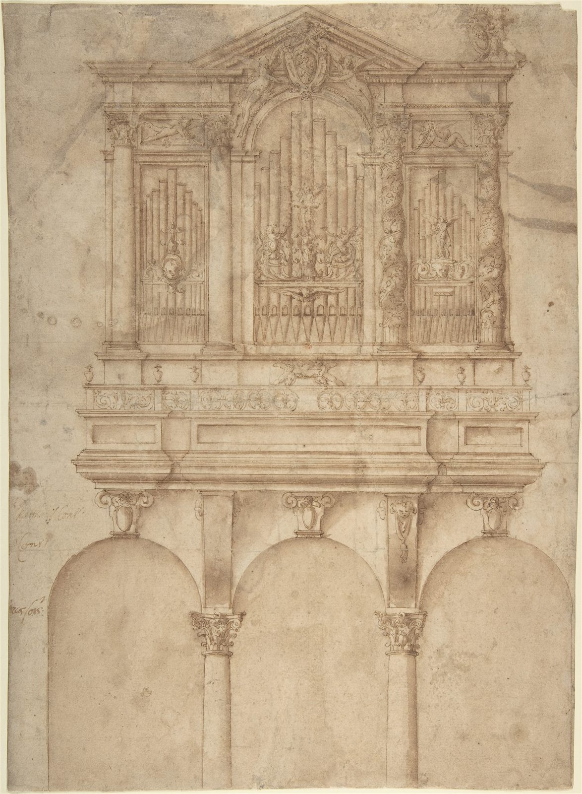
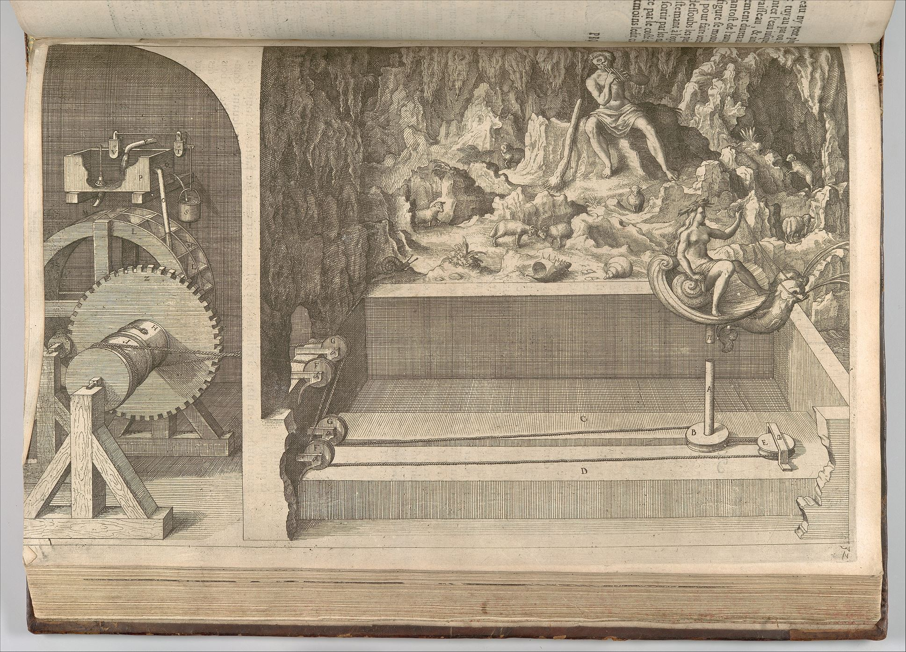
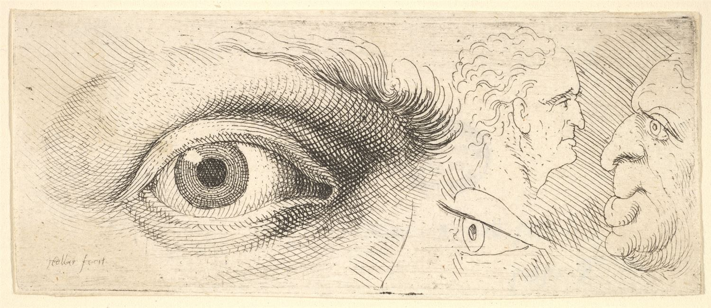

making noise in austin, tx.
JoshProcell
sound designer.
audio engineer.
musician.



sound designer.
audio engineer.
musician.
last updated: [changelog: under construction]
1 A Pipe Organ with Papal Arms, anon. Italian, 16th c.2 The Academy of Baccio Bandinelli, Enea Vico, ca. 15443 A Machine for a Moveable Galatea in a Grotto, Salomon de Caus, 16154 Two eyes and two heads, Wenceslaus Hollar, 1644–525 Anatomical study of a man seen from Behind, Jan Steven van Calcar, 1543 (1934 print)6 The Trojans pulling the wooden horse into the city, Giulio Bonasone, 1545The Metropolitan Museum of Art, Open Access (CC0)